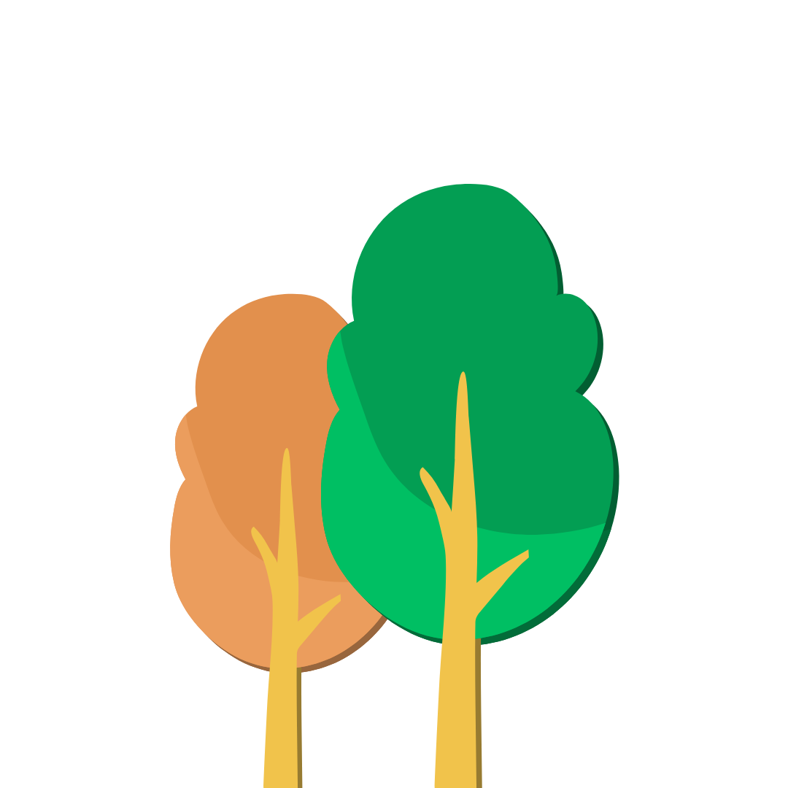

Bem vindo
Bem-vindo ao para aulas de
campo Sensorial, uma iniciativa
dedicada a proporcionar experiências
acessíveis e acolhedoras para
estudantes autistas e seus colegas.
Nosso objetivo é oferecer roteiros
cuidadosamente planejados, levando
em consideração estímulos sensoriais,
acessibilidade e conforto, para que
todos possam desfrutar plenamente
das aulas de campo de forma
integrativa e significativa.

